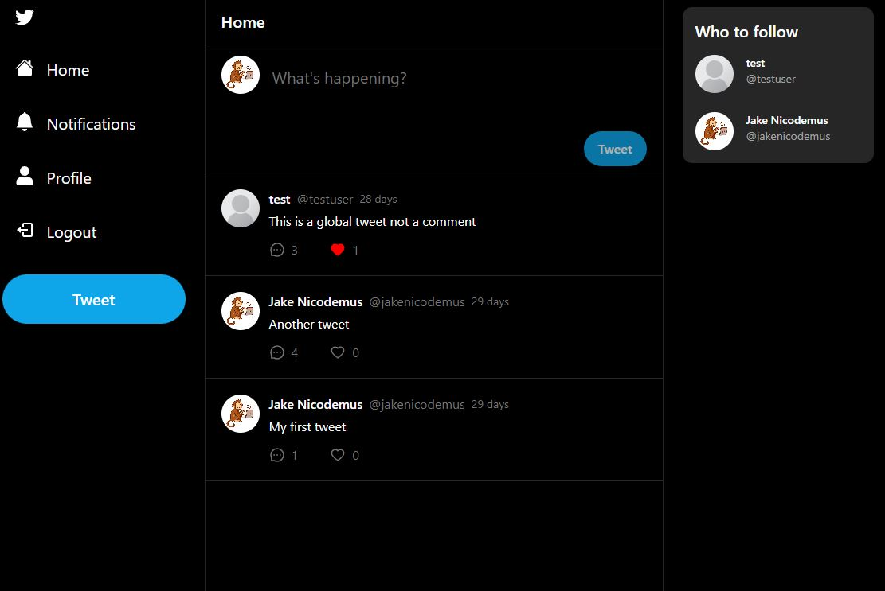
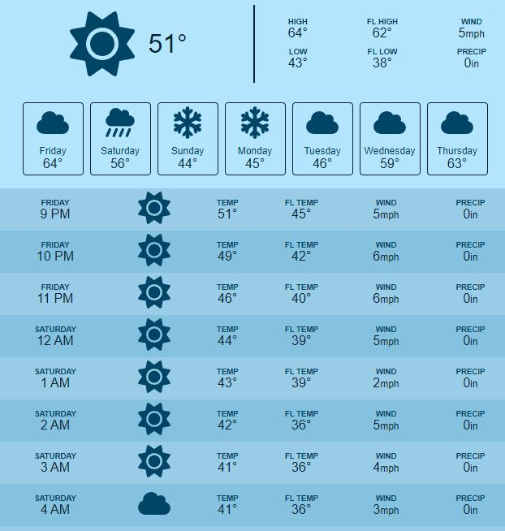
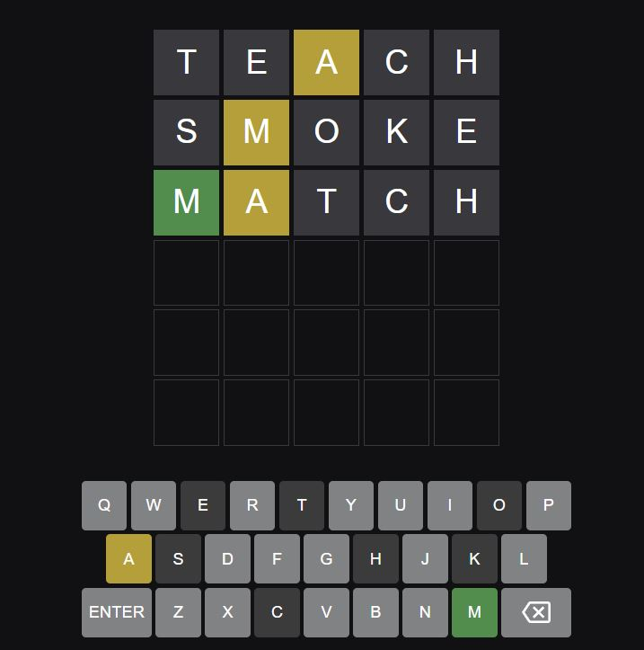
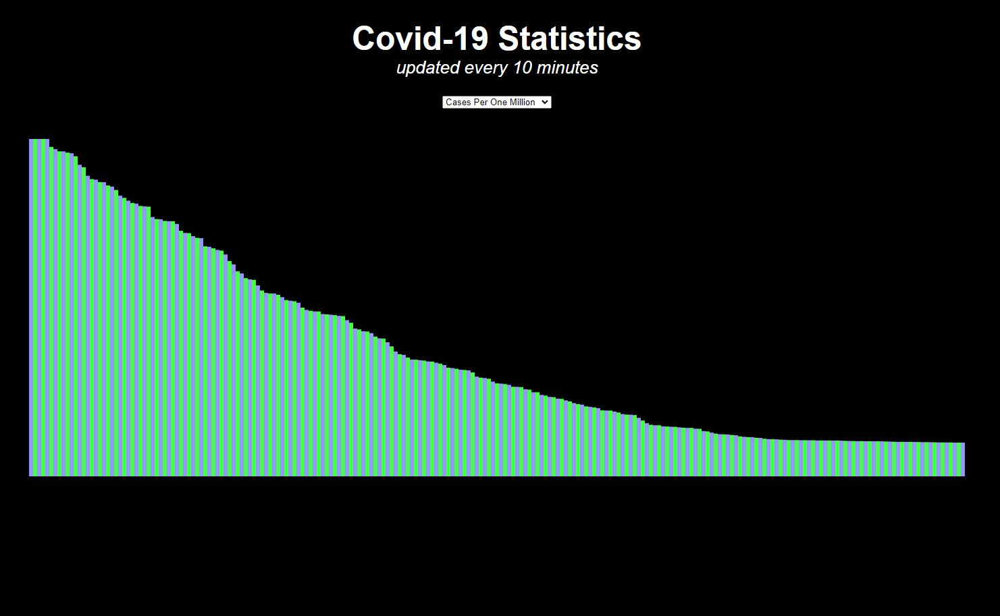

Check out some of my projects
-

Instant Messenger
A beautiful, modern, and responsive messaging app with google account authentication and realtime functionality.
-

Twitter Clone
A fully featured Twitter clone complete with user authentication. Post tweets, like and reply to others, and follow your favorite users.
-

Weather App
A simple and responsive weather app with a focus on readablility. The open-meteo API provides weather data based on user location.
-

Wordle Clone
A wordle clone that features the same word lists and animations as the original hit game.
-

Covid-19 Tracker
An app that displays live Covid-19 data in a bar graph. Hover over a bar to see more information.
Let's work together
For contact and further inquiry